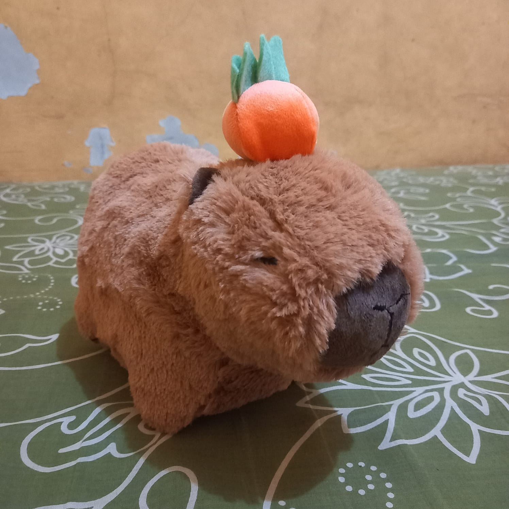

Pendekar Dot Ijo

Pendekar Dot Ijo adalah anak pertama dari seorang Iki. Ia juga yang sering disakiti oleh paman dan
bibinya. Bahkan, Iki, sebagai seorang Ayahpun ikut serta menyakitinya. Dan ketika saya mengetik ini
ia malah tertawa dan tak bisa berhenti. Coba aja kalian tau gimana suara ketawanya yang sangat
terbahak bahak. Kau pasti menggeleng gelengkan kepala dan berkata didalam hati, 'dasar Ayah durjana'
Capy

Capy adalah anak kedua dari seorang Iki. Ia adalah seekor Capybara bocil yang ingusan dan ingusnya
bisa ditarik. Dan kalo ingusnya dilepas ingusnya akan kembali kehidungnya. Sungguh ingus ajaib.
Iki pertama melihat Capy di Griya. Ia meronta-ronta kepada Ibu Desi untuk membeli boneka Capy
dengan model yang sama, hanya saja ukurannya yang berbeda. jadi, Bapa Diding membeli Capy bocil
di Shopee.
Bara

This is Bara. Bara adalah anak kesayangan Iki. Ia adalah seekor boneka Capybara yang kepalanya
melubangi roti.
Susanto

Susanto adalah anak terakhir dari seorang iki. Ia baru saja dilahirkan kurang dari 2 jam saat saya
mengetik ini. Susanto memiliki buah berwarna oranye di atas kepalanya. Legenda mengatakan buah itu
adalah buah jeruk, legenda lain mengatakan buah itu adalah buah persik. Namun tidak ada yang tau
kebenarannya sebab ia baru saja dilahirkan.